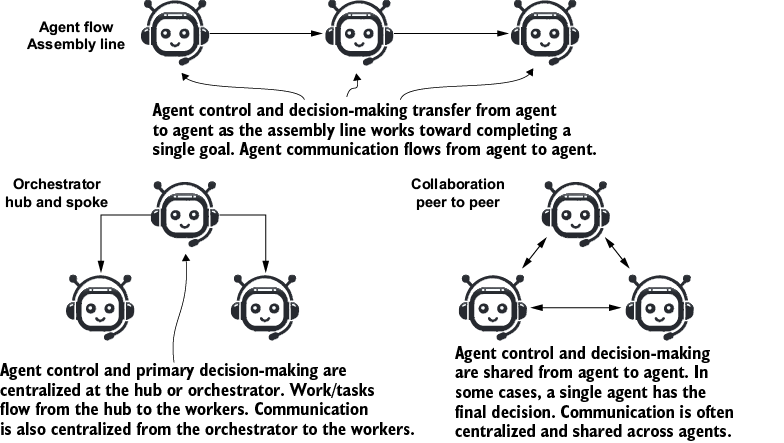
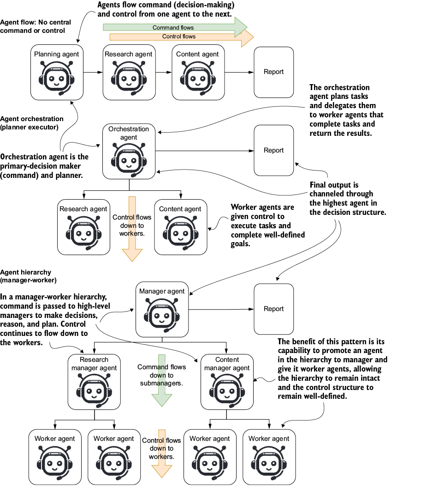
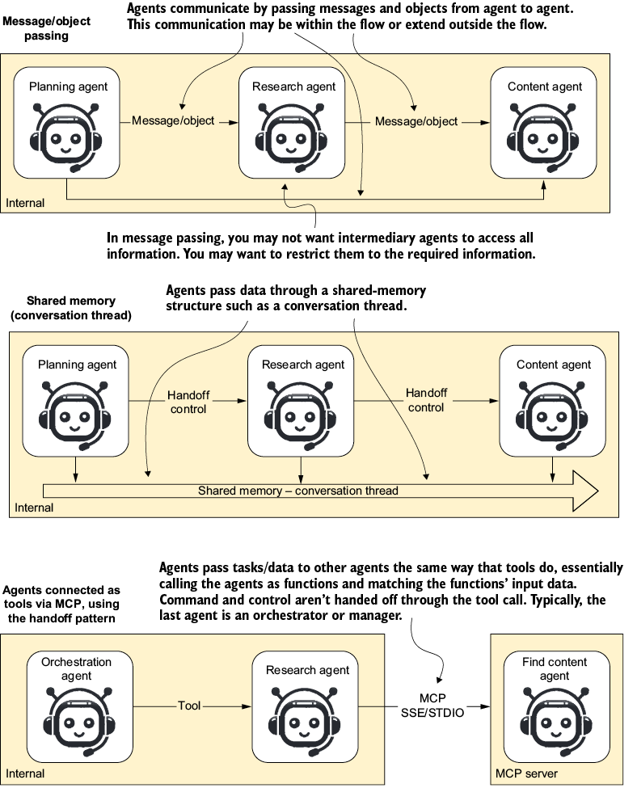
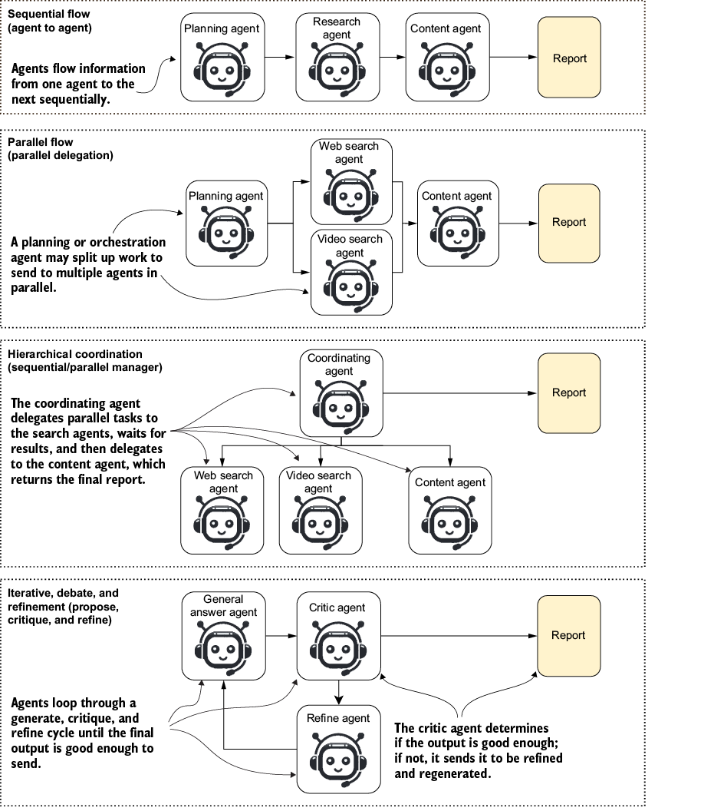
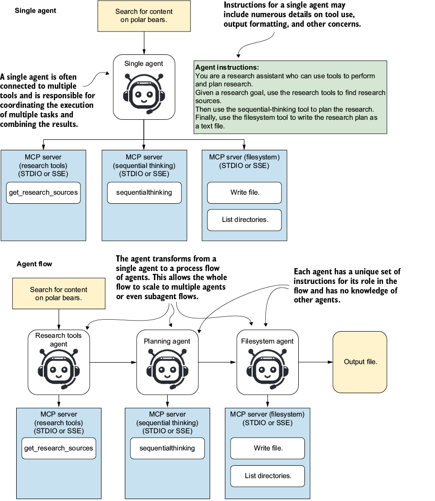
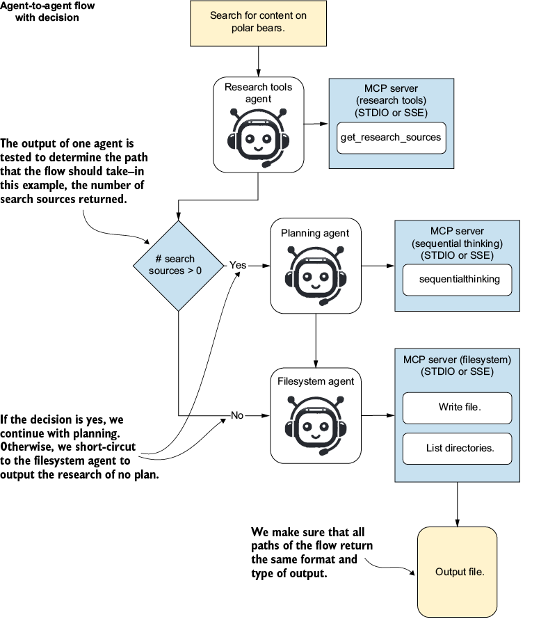
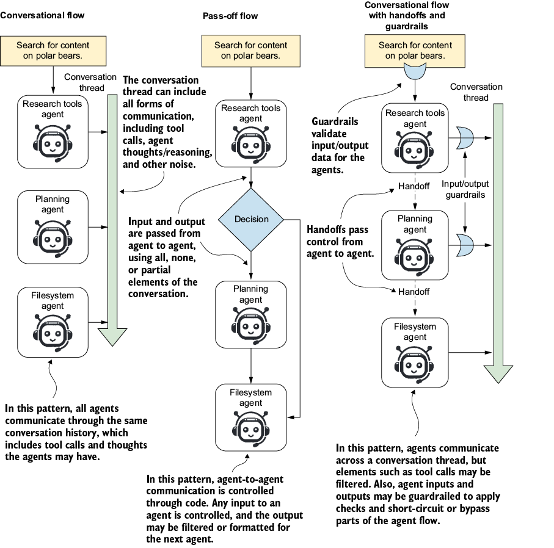
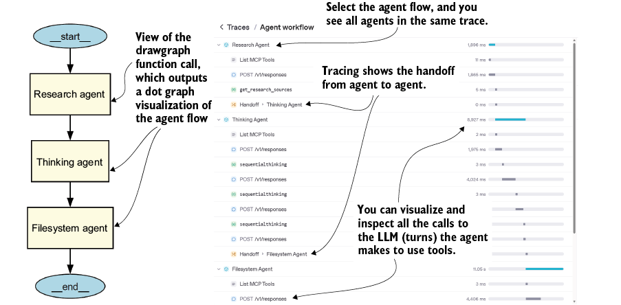
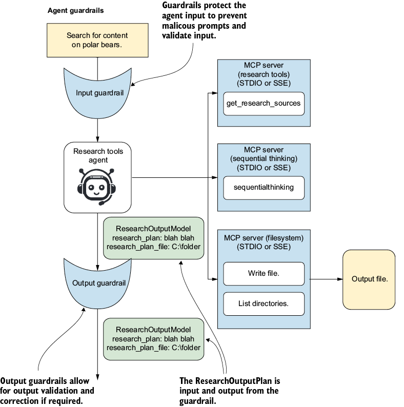
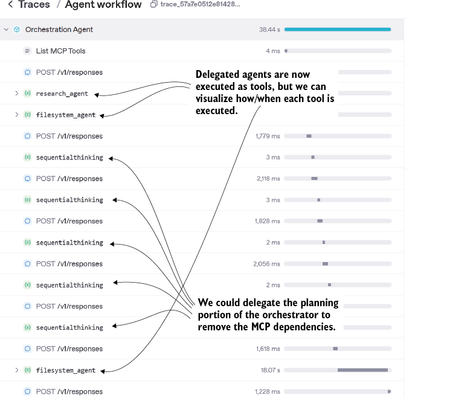

Shortly after single AI agent systems emerged, developers and researchers began adding more agents. The concept was simple: more agents meant they could tackle and solve more difficult goals. The 2023 wave (AutoGPT, BabyAGI) was the first to go viral, and both surfaced the same failure mode within weeks. Unconstrained loops where one agent kept spawning subgoals were impressive in demos and brittle in practice. The next wave responded with structure. MetaGPT introduced role-based teams that mirrored a software company (CEO, product manager, engineer, QA). CrewAI and AutoGen formalized collaborative team patterns where agents had defined responsibilities and communication channels. By 2024, the experimentation had moved from “more agents will solve it” to “the right shape of agents will solve it,” and several key architectures emerged.
It was also during this period that increasingly complex single-agent systems began to surface. The concept was simple: a lone agent eliminated the need for complex multi-agent coordination and communication strategies. In practice, though, single agents have limitations in tool use, reasoning and planning for detailed tasks, and the ability to switch focus.
In this chapter, we explore the main practical patterns for building multi-agent systems. We look at why and when we may need to move from single-agent systems to more complex workflows. Then we delve into how agents communicate and transition from one to another, and how we can monitor and protect agent-to-agent communication.
Let’s look at three fundamental multiple-agent architectures you can apply to extend single-agent systems and tackle complex, fine-grained, multistep goals. Think of these architectures as pattern blocks that can be mixed and matched as needed. There is also no hard rule that says you must always use a particular pattern for a specific use case.
Multi-agent architectures are more potent than single-agent systems. If not employed effectively, though, multiple agents are often more costly, have increased latency, and are more unpredictable. With due diligence and by following best practices, multi-agent architectures become easier to develop and maintain.
Through research and practical use, three multi-agent architecture patterns have emerged for building these systems. We saw these architectures in chapter 1, but let’s quickly review them. Figure 4.1 shows the flow, orchestration (hub-and-spoke), and collaboration architectures.

Before getting into these patterns further, let’s look at what decision-making, control, and communication mean to agent systems.
In the flow pattern, decision-making, control, and communication are executed in an assembly line, flowing from agent to agent. In the orchestrator pattern, decision-making is centralized, and communication flows from the central agent, while control is passed from the hub to the worker as needed. Finally, the collaboration pattern allows decision-making and control to pass from agent to agent and all agents to communicate through a centralized channel. Table 4.1 summarizes these details.
| Concept |
Agent examples |
|---|---|
| Decision-making (command) |
An agent with command (decision-making) ability may decide which tools to use and how to use them. Extend this further to an orchestration agent, which is given command over other agents to perform tasks. |
| Control |
Control represents the ability for an agent to execute a tool, perform actions, and produce output. Think of agents with control as those performing the work. |
| Communication |
Communication is the channel that enables agents to interact with one another. In the agent flow pattern, communication messages are often chained from one agent to another. In the orchestrator pattern, communication flows from the orchestrator to the workers and back. |
These three concepts (decision-making, control, and communication) are the axes along which any agentic pattern varies. Patterns themselves come later in the chapter, where you will see how flows, orchestration, and collaboration each commit to a different shape across these three axes. Your experience will often dictate which pattern to use for a particular use case, and a reasonable starting point is to build flows before moving to orchestration, collaboration, or other coordination strategies. Before creating any patterns, though, it is worth understanding how decision-making, control, and communication will move through your architecture. That understanding is what makes the choice of pattern deliberate rather than default.
Decision-making (command) and control are central to any agentic system, so let’s dig into more complex examples that demonstrate three different strategies: agent flow, which has no central command or control, just agent-to-agent communication; agent orchestration, where an agent executes the plan after receiving information from other agents; and agent hierarchy, where one agent acts like a manager, delegating tasks to worker agents. Figure 4.2 shows how these common agent decision (command) and control patterns work.

At the top of the figure is the agent flow, where no central decision-making or control occurs. Next, in the orchestration pattern, the decision-maker is the orchestrator, who delegates tasks appropriately to the worker agents. Finally, the manager-worker pattern is a more general extension of the orchestrator pattern, in which hierarchical relationships between manager agents pass commands down to submanagers and worker agents, who retain control over task execution. Table 4.2 highlights the three patterns along with their positives and negatives.
As a rule, more complicated patterns provide more control, provided you understand how to manage the three elements of DM/Control/Communication. If you struggle with delegation patterns (orchestrator, manager-worker), for example, stick with the flow pattern. Agent patterns are a construct for building multi-agent systems; you can apply any pattern to any use case, but as we’ll see, some patterns are more effective than others.
| Pattern |
Pros |
Cons |
| Flow |
Breaks down a complex single agent One large goal can be easily decomposed. No need for complex decision-making Easy to evaluate and debug |
Lacks the ability to partially execute all agents; generally all or nothing Poor decision-making ability Fragile: if a single agent fails, the whole flow fails |
| Orchestrator |
Handles complex decision-making Executes some or all agents as needed Well-suited for direct user interaction Robust; worker agent failures can be easily recovered |
Complex to build, debug, and evaluate Orchestrators need strong evaluation, guardrails, and feedback mechanisms. |
| Collaboration |
Ambiguous, complex goals and tasks with multiple possible outcomes |
Costly, with high token usage and high latency Difficult to build evaluations and feedback mechanisms |
Communication is a core element in regulating the amount of information your agents can access. We limit communication between agents for two reasons that compound. Both reasons matter even on systems that look small from the outside.
The first is cost. Every token of shared context gets billed on every LLM call that includes it, and in a multi-agent system, that fan-out adds up fast. A worker agent reading the full history of an orchestrator and three siblings is paying for context it does not need.
The second is selection accuracy. Modern LLMs can technically handle hundreds of thousands of tokens of context, but their ability to pick the most relevant piece degrades as the irrelevant material grows. This is sometimes called context dilution or “lost in the middle,” and it is a measurable performance issue, not a metaphor about confusion.
Consider a concrete example. The user asks a research orchestrator for a competitive analysis of three companies. The orchestrator decomposes the work into three parallel research subagents, one per company, then a synthesis subagent that combines the results.
The right communication shape is for each research subagent to receive only the company name, the rubric, and the output schema. Sending each one the full user request, the orchestrator’s plan, and the other companies’ partial findings would inflate cost on every call. It would also force the research subagent to re-justify why it is researching its assigned company instead of one of the others.
The synthesis subagent has different needs. It receives the three completed research outputs but not the orchestrator’s internal planning notes. Each communication boundary is a deliberate decision about what context earns its place at that step.
The typical communication strategies we see in agent systems include passing messages or objects as needed, but they may also consist of all agents observing a central conversational thread. Likewise, agents may communicate with each other through developing protocols such as MCP. Figure 4.3 shows these methods of agent communication put into practice.

At the top of the figure is a typical flow communication pattern in which all messages and objects are passed from one agent to the next. In some cases, we may not want all information shared and instead limit middle worker agents to only the messages they need to complete tasks. Conversely, the shared memory or conversation channel communication pattern provides the same access to all agents. At the bottom of the figure, communication is restricted to an agent used as a tool over MCP or provided through a function. Table 4.3 summarizes the communication patterns and the pros and cons of using each in the flow pattern.
| Communication pattern |
Pros |
Cons |
| Message passing |
Simple and effective Limits messages to just what is needed Filters out noise |
Messages are only as good as the previous agent’s output. |
| Shared message thread |
All agents are aware of previous exchanges. Robust; failures in agent execution may be recoverable |
Context window size grows with each agent. Increases token use. Can cause confusion; agents may lose focus and perform other tasks |
| Tool exchange (MCP) |
Limits messages to just what’s needed Communication is structured and well-defined. |
Overhead of making a tool call for each communication |
As with decision-making and control, you can combine, mix, and match agent communication patterns. Sometimes this may be intentional because you want the benefits of multiple patterns across a complex workflow. Generally, you will want to align with one pattern and use it across agents in the same code base.
Command, control, and communication are the first three Cs of building agents. But there is a fourth C, coordination, that defines how agents can coordinate execution along a single path or across parallel or multiple paths of execution. Figure 4.4 shows four examples of how agents may coordinate execution within flow and orchestration patterns.

The figure shows the four most common strategies for assembling agents to execute tasks and coordinate output. At the top, the sequential flow, or agent-to-agent pipeline, executes agents one after another. Next is a parallel flow where the two middle agents execute simultaneously.
Beneath that is a hierarchical coordination pattern, a modified orchestration shape where some worker agents execute in parallel and others sequentially. At the bottom
is the iterative critique pattern, where a single critic agent gates a single worker agent and keeps cycling until the worker’s output meets the goal. This is distinct from debate patterns, which involve two or more peer agents arguing toward consensus, rather than a single critic refining a single worker.
The terms are easy to mix up because both involve evaluation, but the agent count and the relationship are different. Critique is one-to-one and hierarchical (the critic has authority over the worker’s output). Debate is many-to-many and peer-based (no single agent controls the outcome).
We can combine agents in different ways, depending on the situation. You can also chain or embed these strategies within other strategies, which can lead to very complex agent workflows. But you will always want to start with the most straightforward approach and pattern that work and then refine and iterate later.
Agents work best when they have agency and can make decisions, but unconstrained agency is rarely the right answer in production. The central tension in agentic systems design is balancing flexibility (the agent decides what to do, which makes it an agent) against ownership (the system decides what the agent is allowed to do, which makes the system reliable). Reviewers and practitioners report this as the hardest balance to strike, and there is no universal answer.
The honest framing is that agency and constraint live on a spectrum, and where you sit depends on what is at stake. Higher-stakes work (production deployments, regulated domains, irreversible actions, customer-facing output) incurs greater constraints. Lower-stakes work (internal research, exploratory analysis, draft-quality output) tolerates more agency.
The practical heuristics are worth naming. Start with the least amount of agency needed to solve the problem, and add more as you observe the agent handling it well. Constrain agency at the boundaries that matter most (tool access, output schemas, action budgets, human-in-the-loop checkpoints for irreversible work), and leave it loose everywhere else. Treat agency as something the agent earns through demonstrated reliability, not something it is granted by default.
With that framing in mind, evolving a single agent to use the flow pattern is a reasonable first move. The flow pattern provides the agent with enough structure to behave reliably while leaving within-step decisions open. From there, you can customize and adapt in either direction, tightening constraints where the agent is failing or loosening them where it is succeeding.
Let’s take a closer look at the execution and coordination strategies shown in figure 4.4, along with a few more you may find useful.
The sequential pipeline is the simplest agent-to-agent pattern and the one we already saw at a high level. Each agent runs one stage and passes its output to the next as input. The pattern is linear, deterministic, and the easiest of all the patterns to reason about.
What this section adds beyond the overview is the design decisions hidden inside that simple shape. The first is data shape between stages. Each agent’s output schema becomes the next agent’s input schema, so changes anywhere in the pipeline ripple to every downstream stage.
The second is failure handling. A failure at stage three of a four-stage pipeline kills the whole run unless the pipeline is designed to retry, skip, or fall back. Most production sequential pipelines wrap each stage in a retry-with-backoff and surface a clear error if the retry budget is exhausted.
The third is when to choose this pattern over the others. Sequential pipelines are the right shape when each stage genuinely depends on the previous one (you cannot summarize data you have not analyzed, and you cannot analyze data you have not generated). They are the wrong shape when the stages are independent, in which case parallel flow is faster, or when the work needs revision, in which case the iterative critique pattern fits better.
This approach is well-suited for tasks naturally broken into ordered stages or a fixed workflow. It is commonly used in data processing or document workflows (e.g., cleaning > analysis > summarization) where each step’s output feeds the next. It provides a clear, easy-to-trace structure.
Sequential pipelines have real costs worth naming, and they are the costs that drive the choice toward other patterns when those costs are unacceptable. They are not arguments against the pattern itself. Sequential pipelines are the right shape for a large class of agent work, as covered in the previous section.
The first cost is latency. Each stage waits for the previous stage to complete, so the total time is the sum of stage times, even when some stages could have run in parallel. For workflows where stages are genuinely independent, parallel flow cuts that latency at the cost of more concurrent calls.
The second cost is fragility. A failure at any stage stalls the entire pipeline unless each stage is wrapped in retries and clear error handling. The fragility is manageable with the patterns named in the previous section, but it is real and grows with pipeline length.
The third cost is the lack of revision. Sequential flow is one-way, so a stage that produces poor output cannot be rerun without restarting the pipeline or building explicit revision logic on top. For tasks that need iteration or backtracking (writing, design, complex analysis), the iterative critique pattern handles this natively.
Multiple agents can also work on subtasks or portions of a task simultaneously before merging results. Independent tasks are delegated to different agents to execute in parallel. A downstream agent or step then combines or synthesizes their outputs.
The parallel flow is useful for speeding up workflows by handling independent components at once. Imagine, for instance, an AI system processing text, images, and audio in parallel streams and then combining insights. This pattern is also useful for exploring many possibilities concurrently, such as generating multiple solution drafts at once.
Parallel flow is not suitable when subtasks have strong dependencies or must be done in strict sequence. Also, overhead can be high if results need heavy synchronization or merging. If tasks are small or inherently serial, parallelization adds unnecessary complexity without much gain.
In hierarchical coordination, a top-level manager or orchestrator agent breaks a complex goal into subtasks, assigns them to specialized worker agents with specific instructions, supervises their execution, and integrates the results. The picture is a “boss” agent overseeing several “expert” agents, where the boss is doing real planning and control work, not just splitting and merging. This pattern uses parallel execution underneath, but spends most of its complexity on the management layer.
The distinction from parallel flow is worth drawing carefully because they look similar in a diagram and behave differently in practice. Parallel flow decomposes a task into independent pieces, runs them concurrently, and merges the results, typically with a simple aggregation. The orchestrator in parallel flow is doing splitting and merging, not planning.
Hierarchical coordination uses parallel execution as a tool, not as the architecture. The orchestrator decides what each worker does (often differently from the others, with role-specific instructions), monitors their progress, and integrates results that may need reconciliation rather than aggregation. The same set of three workers running concurrently can be parallel flow or hierarchical coordination depending on whether the orchestrator is splitting a uniform task or planning differentiated work.
The practical test is the orchestrator’s job. If it could be replaced by a fan-out/fan-in primitive, the pattern is parallel flow. If it cannot, because the planning, role assignment, supervision, or integration is doing real work, the pattern is hierarchical coordination.
Hierarchical coordination is effective for complex, multistep problems that benefit from task decomposition and specialization. For example, an orchestrator agent can coordinate multistep research or content generation by dynamically deciding subtasks and picking the best agent for each. It provides clear oversight and manages interdependencies among subtasks.
This is overkill for simple or well-bounded tasks where a single agent suffices. The coordination overhead and complexity are high; if the leader agent fails or makes a poor plan, the whole system suffers. Hierarchical orchestration is not ideal when tasks cannot be clearly decomposed, or when low latency is critical (due to planning overhead).
The iterative debate pattern is the most consequential multi-agent pattern in production agent systems, and it is worth slowing down on. Two or more agents work toward a high-quality output through repeated rounds of proposal, critique, and revision. The agents converge on a well-vetted solution rather than committing to the first plausible answer.
The pattern comes in two main variants, and the choice between them matters. In the symmetric variant, each agent both proposes and critiques. Two equal peers argue toward consensus, taking turns making and challenging claims, with no fixed division of labor.
In the asymmetric variant, the roles are split. One agent (the proposer or worker) generates candidate solutions, and another agent (the critic or judge) evaluates them, returns specific objections, and gates whether the work continues to the next round. The asymmetric variant is the same shape as the iterative critique pattern shown earlier, scaled up to multiple proposers, multiple critics, or both.
The symmetric variant works well when the goal is exploring a question with no clear right answer (research synthesis, strategic analysis, ethical reasoning) and the value comes from genuine disagreement between perspectives. The asymmetric variant works well when the goal has a quality bar that can be evaluated (code that passes tests, summaries that meet a rubric, plans that satisfy constraints) and the critic’s job is to enforce that bar.
Both variants need a stopping condition, or they loop indefinitely. Common stopping conditions include a maximum round count, a convergence test (agents agree or stop changing their answers), or an explicit pass from the critic. Production systems usually combine these, with a hard maximum to prevent runaway and a quality test that lets the loop exit early when the work is good enough.
This iteration is valuable for high-stakes or ambiguous problems requiring thorough analysis, verification, or creativity. By using diverse viewpoints, the agents can catch each other’s errors and improve reasoning. This strategy has been used to boost factual accuracy and complex reasoning, as when agents debate a scientific question or policy effect to reach a well-justified conclusion.
The approach is unsuitable when quick, straightforward answers are needed or for trivial tasks where the multiround dialogue would be overkill. It can be slow and computationally expensive since many LLM calls are involved. If agents share the same blind spots or biases, debate may not help (they might simply reinforce each other), and reaching consensus can sometimes average out creative solutions.
Here, several agents (or the same agent run multiple times) generate solutions for the same problem, and then a voting or selection mechanism picks the best answer or a consensus result. This could be a simple majority vote, a weighted vote (giving more weight to certain agents), or selection by a “judge” agent.
Voting is useful for improving reliability and accuracy by combining multiple opinions. It’s common in scenarios like diagnostic systems or evaluations, where multiple models and agents assess an input, and the system chooses the majority or most consistent answer. It reduces the impact of any single agent’s error or bias, since outliers can be outvoted.
The pattern is less effective when all agents are identical, because they tend to make the same mistakes, and voting on identical answers buys nothing. It is also inefficient when generating many answers is costly or slow. If a task has a single correct output that one agent can easily obtain, running N instances and voting is overkill.
A naive majority vote can also fail when the majority is confidently wrong, usually because of a shared bias or shared misinformation in the agents’ context. The mitigation is to engineer genuine diversity into the agents, and the strategies are worth naming because they are not interchangeable.
The highest-leverage source of diversity is the use of different models. A run that combines a Claude agent, a GPT agent, and a Gemini agent produces more varied responses than three instances of the same model, because the underlying training data, alignment, and reasoning style differ across providers. This is the strategy production systems reach for when correctness matters and budget allows.
The next lever is prompting. Different system prompts that frame the task from different angles (one agent as an optimist, another as a skeptic, another as a domain expert) push instances of the same model toward different solution paths. The diversity is real but bounded by the model’s underlying biases, which is why prompting alone is weaker than mixing models.
The honest framing is that diversity is the design problem inside this pattern, and the choice of strategy depends on what you can afford to vary. Different models produce the most heterogeneous solutions and incur the highest operational costs. Different prompts are cheaper and produce moderate diversity.
In role-playing, agents are assigned complementary roles and interact in a cooperative dialog to accomplish a task. A classic example is the CAMEL framework’s AI User and AI Assistant roles: one agent poses instructions or problems, and the other provides solutions; the two work step-by-step through the task. By simulating an instructor-assistant (or client-developer, teacher-student) dynamic, the agents can clarify requirements and iteratively improve the output through their interaction.
Use this when a task benefits from an interactive exchange or multiperspective brainstorming. For instance, in code generation, one agent can act as the “client,” describing requirements and testing code, while another is the “developer” writing the code. It’s also useful for generating conversational data or Q&A pairs, with one agent asking questions and another answering. The role interplay helps when the problem needs iterative clarification or creative back-and-forth.
Role playing is not helpful if the roles don’t add new information or value; for simple tasks, a back-and-forth dialog just adds latency. There’s also a risk of circular or unproductive conversations if roles are poorly defined. Additionally, two agents might amplify each other’s errors if they lack an external check (for example, a mistaken assumption by the “user” agent could mislead the “assistant”).
This system includes a router agent or logic that directs an input to one of several specialized agents or workflows based on the input’s nature. Essentially, the first step is a classifier that decides “who should handle this?” and then hands off to the appropriate expert agent(s). For example, a user query might be analyzed and routed to a math problem-solver agent versus a legal-reasoning agent.
Conditional routing is ideal for heterogeneous task loads in which not every agent should attempt every query. It is commonly used in customer-support bots or assistant frameworks that must handle multiple domains; the router can send technical questions to a technical expert agent or billing questions to a finance agent. This ensures each task is handled by the most qualified agent or chain.
This approach is not needed when all inputs are similar or one generalist agent can handle them. It’s also problematic if inputs are misclassified, as a wrong routing can lead to a bad answer. If a query spans multiple domains (e.g., a question that is both technical and financial), a simplistic router might struggle, so this strategy works best when tasks can be cleanly separated. The routing process itself adds overhead, so it’s inefficient for simple, uniform tasks.
In this approach, there is no central coordinator; agents communicate and cooperate in a decentralized peer-to-peer manner. Each agent shares knowledge or partial results with others, and the team converges on a solution collectively. This emergent coordination can involve broadcasting information or negotiation among agents instead of a top-down plan.
Peer-to-peer is especially useful for distributed decision-making and scenarios requiring high robustness. For example, in a cybersecurity monitoring system, multiple detector agents might exchange alerts and insights to collectively identify threats without relying on a single leader. Decentralized setups can be more fault-tolerant (agents can pick up slack if one fails) and adapt dynamically as agents join or leave.
Because no single agent oversees the process, this pattern is harder to design and debug. So it’s not advisable for tasks that need strict global control or a clear sequence of actions, because a free-form network might suffer from race conditions or inconsistent views. Communication overhead can grow quickly as each agent interacts with many peers. If agents do not have a shared strategy or conflict-resolution method, the system can drift or deadlock. Like other complex plans, it is inefficient for small teams or straightforward problems where a simple plan would suffice.
Table 4.4 summarizes when to use, and when not to use, this more detailed list of agent architectural patterns.
| Pattern |
When to use |
When not to use |
|---|---|---|
| Sequential pipeline, agent to agent |
Well-defined, ordered tasks need to be executed in sequence. |
Not all agents need to be executed every time. |
| Parallel delegation |
Multiple tasks or agents can be executed in parallel to improve performance. |
|
| Hierarchical coordination |
The user interface agent delegates to multiple agents on behalf of the user. |
No need for complex decision-making or command of agents |
| Iterative debate and refinement |
You want to review and double- or triple-check responses. |
The problem is trivial or aligns well with simple execution. |
| Voting/best-of-N (ensemble) |
Ambiguous problems that may have multiple interpretations or facets |
Unambiguous problems |
| Role-playing collaboration |
High creativity and novel outputs are desired and align well with the principal goals. |
Real-time systems or cases with low desired creativity |
| Conditional routing (branching) |
Customer support systems that may require human approvals or intervention |
|
| Peer-to-peer network |
Decentralized command increases system robustness and reduces or eliminates complete failure. |
Let’s zoom in on the agent flow pattern and see how it can transform a single monolithic agent into a more practical and efficient agentic system. The agent flow pattern has evolved through the practical experience of building production agent systems. While we often prefer to use a single agent, a flow of agents can be more helpful for breaking down and understanding the behavior of your agent’s actions.
Unless you have practical experience building agent systems, you will likely build your first system using a single agent. For many simple use cases, a single agent is perfect. But as we add functionality to an agent, it may require more tool use and, in turn, more complex instruction prompts. When agents become overloaded, you will often need to break one agent into multiple agents.
A typical transformation from a single agent to the agent-to-agent flow pattern happens when the single agent is broken into multiple agents, each with specialized roles and responsibilities to perform duties specific to its role in the flow. There may be various reasons for transforming a single agent into a flow of agents, including
search_documents versus search_files). The fix is making each tool’s description distinct enough that the disambiguation is clear from the descriptions alone.Figure 4.5 demonstrates how a single monolithic agent can be decomposed into a flow of role-based agents.

Listing 4.1 shows the “before” view of the agent shown at the top of figure 4.4. Here, the agent consumes tools from multiple MCP servers and requires knowledge of how to use each one. You’ll notice in the code that the servers are created and wrapped in the same context. This allows all three servers to be cleaned up after the agent completes its goal.
servers = [
MCPServerStdio(
name="Research Tools", #1
params=MCPServerStdioParams(
command="mcp",
args=["run", str(SCRIPT)],
),
),
MCPServerStdio(
name="sequential-thinking", #2
params={
"command": "npx",
"args": [
"-y",
"@modelcontextprotocol/server-sequential-thinking"
],
},
),
MCPServerStdio(
name="filesystem", #3
params={
"command": "npx",
"args": [
"-y",
"@modelcontextprotocol/server-filesystem", SANDBOX
],
},
),
]
instructions = """ #4
You are a research assistant who can use tools to perform and plan research.
Given a research goal, use the research tools to find research sources.
Then, use the sequential thinking tool to plan the research.
Finally, use the filesystem tool to write the research plan as a text file.
"""
async with (
servers[0] as research_srv,
servers[1] as thinking_srv,
servers[2] as fs_srv,
): #5
agent = Agent(
name="Assistant",
instructions=instructions,
mcp_servers=[research_srv, thinking_srv, fs_srv],
)
goal = """
Produce a research plan to find the book:
'The Hitchhiker's Guide to the Galaxy'
"""
print("Running...", goal)
result = await Runner.run(agent, goal) #6
print(result.final_output)
Run the code in listing 4.1, and the agent will respond with the filename where the research plan was saved. The agent runs fine at this stage, but extensibility breaks down fast. A single agent loaded with 30 tools and 4,000 tokens of system prompt typically shows measurable drops in selection accuracy compared to the same agent with 8 tools and 1,500 tokens.
Each tool’s JSON schema and description gets sent on every LLM call, so a tool count of 30 might add 6,000 to 12,000 tokens of overhead per call before the user’s prompt is even processed. At Claude Sonnet 4.6 input rates, that is roughly $0.02 to $0.04 per call in pure tool-description overhead, multiplied across every step of an agent loop.
Agent-to-agent flows are similar to prompt chaining, where the output of one prompt is chained to the next. The difference between prompts and agents is that agents can make decisions through tool use. In this section, we will convert the single agent depicted in figure 4.4 to the multi-agent flow pattern shown at the bottom of the figure.
In general, when decomposing an agent, consider the roles it performs, then split the agent by role. Breaking down by role allows you to better define the agent’s limitations and ownership, which also reinforces the role in the agent instructions and limits ownership to the tools required for that role.
Listing 4.2 shows the transformation of a single agent into an agent-to-agent flow. In this example, we create a new agent for each MCP server and define a role specific to that server. How you break up a single agent may vary based on the tools it uses, the roles you want, and your expected outputs. As a rule, think about specializing agents first, and then map roles appropriate to those specializations.
research_agent = Agent(
name="Research Agent", #1
instructions="""
You are a research assistant.
Your role is to find research sources.
""",
)
thinking_agent = Agent(
name="Thinking Agent", #1
instructions="""
You are a research assistant.
Your role is to plan the research.
""",
)
filesystem_agent = Agent(
name="Filesystem Agent", #1
instructions="""
You are a research assistant.
Your role is to write the research plan as a text file.
""",
)
# MCP server setup remains the same
async with (
servers[0] as research_srv,
servers[1] as thinking_srv,
servers[2] as fs_srv,
):
goal = """
Produce a research plan to find the book 'The Hitchhiker's Guide to the Galaxy'
"""
print("Running...", goal)
research_agent.mcp_servers = [research_srv] #2
result = await Runner.run(research_agent, goal)
thinking_agent.mcp_servers = [thinking_srv] #2
result = await Runner.run(thinking_agent, result.final_output)
filesystem_agent.mcp_servers = [fs_srv] #3
result = await Runner.run(filesystem_agent, result.final_output) #4
print(result.final_output) #4
Ultimately, transforming the single agent into a flow allows you to add multiple agent steps, MCP tools, and other forms of output. It also allows you to control some of the decision-making within the agent flow, making it more deterministic and predictable, as we’ll see in the next section.
The ability to make decisions and give agents agency is a powerful tool. But because agents are powered by LLMs, they are not deterministic. This means the decisions an agent makes may vary based on several factors, such as tool output and agent input. To make a flow or multi-agent system more deterministic, you can make those decision points external and outside the agent’s control. Typically, we do this by pulling out the decision and controlling the process with code to ensure repeatable results.
Figure 4.6 shows an example of an agent flow with an external decision point implemented in code. By coding this decision, we ensure that the output from the research agent is always above zero, effectively creating a guardrail to prevent unpredictable behavior. Leaving this decision to the agent may result in this hard rule (guardrail) being bypassed.

Listing 4.3 shows the changes added to support this deterministic decision-making process (guardrail) in the agent flow. As part of this update, we also updated the Research Tools MCP server to produce a random set of search sources. This change simulates the variability of other tool use or processes.
# variable research tools – updates
@mcp.tool()
def get_research_sources() -> list[str]:
"""Provides 0 to 3 random research sources."""
search_sources = [
"Wikipedia",
"Google",
"YouTube",
]
num_sources = random.randint(0, 3) #1
if num_sources == 0:
return [] #2
return random.sample(search_sources, num_sources)
We simulate a random number of search sources to reflect an LLM-powered agent’s stochastic process and output. Remember, we always must assume that output may vary unless we take steps to make it more deterministic through output typing or other patterns. Listing 4.4 shows the changes to the agents and agent flow needed to support this decision-making process.
# updates to the agent roles, prompts and output data
class ResearchSourcesModel(BaseModel): #1
research_sources: List[str]
"""A list of research sources to use for research."""
research_agent = Agent(
name="Research Agent",
output_type=ResearchSourcesModel, #1
instructions="""
You are a research assistant.
Your role is to find research sources.
Do not make up or invent any research sources. #2
""",
)
thinking_agent = Agent(… #3
filesystem_agent = Agent(
name="Filesystem Agent",
instructions=""" #4
You are a filesystem assistant.
Your role is to write the output as a text file.
Never make up or invent any ouput.
""",
)
# updates to the agent flow with the new decision point
research_agent.mcp_servers = [research_srv]
result = await Runner.run(research_agent, goal)
research_sources = result.final_output.research_sources #5
if research_sources and len(research_sources) > 0: #5
thinking_agent.mcp_servers = [thinking_srv]
agent_input = dict( #6
research_sources=research_sources,
goal=goal,
)
result = await Runner.run(thinking_agent, str(agent_input))
research_plan = result.final_output
else:
research_plan = "No research sources found and no plan was created."
filesystem_agent.mcp_servers = [fs_srv]
agent_input = dict( #6
output=research_plan,
goal=goal,
)
result = await Runner.run(filesystem_agent, str(agent_input))
print(result.final_output)
A lot is going on in this code, so we will go through each section in some detail. First, we update the research agent to return a constrained list of strings as the search sources, using a structured output model called ResearchSourcesModel. The structured output enforces the response shape at the SDK level, so the agent cannot return malformed data even if the underlying LLM tries to.
This makes it easy to confirm whether no sources are returned (the list is empty) or sources exist (the list contains strings). If we allowed an unconstrained string output instead, we would need parsing logic to extract sources from prose, handle malformed responses, and recover from format drift across LLM calls.
Next, we define the decision point as the check that determines how many search sources are returned. If no sources are returned, we default to a static string. If sources are returned, we run the thinking agent to create the plan. But before doing that, we create a dictionary to hold the inputs with labels. When it is converted to a string and sent to the agent, it becomes a JSON input with the same labels, which helps the agent.
Instead of passing the input as a dictionary, we could pass the conversation history for each step. But exchanging conversation history can confuse the agents, and it is generally better to give an agent only the information it needs. This method also significantly reduces token overhead, but it still has limitations, which we will address in this chapter.
After the decision point, we continue by passing the research plan (either real or static) to the filesystem agent, which is then responsible for writing the file output. Again, it is always best practice to output a consistent format and data type regardless of internal processes for agents and agent flows.
In this example, we cut a few corners for brevity and simplicity, but in the next section, we will look at strongly typing inputs and outputs for better agent flows.
As we saw in the last section’s code example, managing the data flow between agents and external code requires strict adherence to typing and formatting. How you implement this typing and formatting varies based on the communication flow you want for your agent’s channel. Figure 4.7 shows three common communication patterns we use in agents.

Starting on the left side of the figure, we can see the conversational flow. This is an established pattern in which all agents communicate across the same conversation thread, including agent inputs and outputs, tool calls, and other noise. The benefit of this pattern is that all agents share the same context. But this is also a drawback because it adds overhead to each agent in the flow.
In the middle of the figure is an example of a pass-off communication system, where the code that calls the next agent controls the input and output of each agent call. We already explored this pattern in the last section. The benefit of this pattern is complete control over every agent interaction and the ability to interject controlled decisions. But the difficulty is that everything needs to be handled manually in code, which can significantly increase code complexity.
Finally, on the left side of the figure is the enhanced agent handoff with a guardrail pattern used by the OpenAI Agents SDK. The benefit here is that all communication can be filtered and monitored on the main conversation thread, maintaining context and limiting token overhead. The disadvantage of this pattern is that restoring the conversation thread requires some finesse if the handoff breaks.
Various agent frameworks implement some form of the patterns in figure 4.6, including the other hierarchical and orchestration structures we saw earlier. For now, though, we’ll examine the conversational handoff pattern implemented by OpenAI Agents.
The handoff pattern transfers control from one agent to another internally without the need to code the transition as we did earlier. Handoffs reduce orchestration code but make dependencies implicit in prompts and harder to inspect. Still, the agents themselves must know which agent they hand off to. This means we need to modify the agent instructions and how we connect agents, as seen in the following listing.
# updates to the agents
research_agent = Agent(
name="Research Agent",
output_type=ResearchSourcesModel,
instructions="""
You are a research assistant.
Your role is to find research sources.
Do not make up or invent any research sources.
Always hand off to the thinking agent. #1
""",
)
thinking_agent = Agent( #2
name="Thinking Agent",
instructions="""
You are a research planning assistant.
Your role is to plan the research.
You will receive a list of research sources from the research agent.
Use the sequentialThinking tool to create a research plan based on the sources.
Always hand off to the filesystem agent. #1
""",
)
filesystem_agent = Agent(
name="Filesystem Agent",
instructions="""
You are a filesystem assistant.
Your role is to write the output as a text file.
Never make up or invent any ouput.
""",
)
# updates to agent connections
research_agent.mcp_servers = [research_srv]
research_agent.handoffs = [thinking_agent] #2
thinking_agent.mcp_servers = [thinking_srv]
thinking_agent.handoffs = [filesystem_agent] #2
filesystem_agent.mcp_servers = [fs_srv]
print("Running...", goal)
result = await Runner.run(
research_agent, #3
goal,
max_turns=25, #4
)
print(result.final_output)
You will notice that the code has become simpler, and the transitions from agent to agent are more seamless. But this also means that agents now need to explicitly explain which agent (by name) to hand off to for the next step in their instructions. That means an agent can no longer live in complete isolation from the flow. It also means that understanding all the connections in a complex agentic system may be challenging. Fortunately, we have a few ways to visualize agent flows.
There are a few built-in benefits to using the handoff pattern with OpenAI built-in traces. One is visualizing the flow graph of the agents using the code in listing 4.6. The visualization does not yet show the MCP servers each agent consumes, but the agent-to-agent flow is rendered automatically.
research_agent.mcp_servers = [research_srv]
research_agent.handoffs = [thinking_agent]
thinking_agent.mcp_servers = [thinking_srv]
thinking_agent.handoffs = [filesystem_agent]
filesystem_agent.mcp_servers = [fs_srv]
from agents.extensions.visualization import draw_graph
draw_graph(research_agent).view() #1
input("Press Enter to continue...") #2
There are a few operational notes worth naming. Agent names are the identifiers used in traces, visualizations, and handoff routing, so renaming an agent breaks any saved traces, dashboards, or hardcoded references that point to the old name. In systems with twenty or more agents, ad-hoc naming becomes a coordination problem, and most teams adopt a convention (domain.role.version is one common shape, like research.planner.v2 or finance.analyst.v1).
For systems past that scale, an agent registry (a single source of truth that maps agent names to their definitions, dependencies, and current versions) becomes the right pattern. The registry replaces hardcoded agent imports with a lookup, making renames safe and letting you see all agents in the system at a glance. We will not build a registry in this chapter, but it will be worth knowing about when your agent count grows past what your team can hold in their heads.
You can also view the agent flow on the OpenAI > Dashboard > Traces page. Figure 4.8 shows the draw_graph view beside the agent flow on the Traces page.

draw_graph and the Traces page on the OpenAI Dashboard, under Logs.The graph visualization of the agent flow is a good way to document your agent process because it gives you an overview of the flow. As always, the Traces page lets us dig in and see all the calls in the flow, which can help debug and explain how the flow operates. This simple agent flow is a good demonstration of visualizing handoffs between agents.
Currently, the default handling of the agent handoff does not indicate what data is handed off to the next agent. Understanding what data passes from agent to agent can be crucial when debugging complex agent behavior that is not performing as expected. To expose this data, we need to use the handoff wrapper function to monitor what passes from one agent to the next and why the handoff was made. The next listing shows how this function is used to monitor and potentially validate the data passed from one agent to another.
async def research_handoff( #1
ctx: RunContextWrapper[None],
sources: ResearchSourcesModel, #2
):
print(f"Thinking agent called with sources: {sources.research_sources}")
research_agent.mcp_servers = [research_srv]
agent_handoff = handoff( #3
agent=thinking_agent,
on_handoff=research_handoff, #1
input_type=ResearchSourcesModel, #2
)
research_agent.handoffs = [agent_handoff] #3
thinking_agent.mcp_servers = [thinking_srv]
thinking_agent.handoffs = [filesystem_agent]
filesystem_agent.mcp_servers = [fs_srv]
print("Running...", goal)
result = await Runner.run(
research_agent,
goal,
max_turns=25,
)
print(result.final_output)
Using the callback function, we can see the data as it passes from agent to agent. Additionally, we could process the data further and execute other agent workflows at the handoff point. This may also seem like a good way to validate data as it moves from agent to agent, but there is a better pattern for this: the guardrail. As a guide, use callbacks to observe and log, but use guardrails when you want to block or correct bad data.
To successfully create complex agent flows, we need to validate the data that enters and exits a flow as well as the agent-to-agent transfers within it. Guardrails provide this validation, but they are not just content filters. A guardrail is a semantic circuit breaker that halts execution before a risky action is committed, which is a meaningfully different design pattern from filtering output after the fact.
The cost is real and worth naming. LLM-based guardrails run an additional model call (or several) per agent step, which adds latency and tokens to every interaction the guardrail covers. For high-volume agent systems, the guardrail layer can rival or exceed the cost of the agent itself.
Cheaper alternatives exist and should be the first move where they apply. Regex and schema validation catch malformed outputs deterministically, but if overused, can increase latency. Classifier models (small, fine-tuned models for toxicity, PII, and prompt injection) catch structured risks at a fraction of the LLM-call cost. Code-based validation (assertions, type checks, business-rule predicates) catches violations the agent should never produce in the first place.
LLM-based guardrails earn their cost when the validation is genuinely semantic and cannot be expressed as a deterministic rule. Examples include checking whether an agent’s plan satisfies a fuzzy quality bar, whether a response is appropriate for the user’s apparent emotional state, or whether a tool call’s intent matches the user’s actual request. These are the cases where deterministic checks fail because the validation requires understanding rather than matching.
A practical defense-in-depth posture combines the layers. Deterministic checks run first and cheaply, classifier models catch structured risks, and LLM guardrails handle the semantic cases that the cheaper layers cannot. Using LLMs to validate LLMs has its own failure modes (the validator can be wrong in the same direction as the agent), which is one more reason not to make the LLM guardrail the only line of defense.
Let’s start by seeing how to implement the guardrail pattern defined by the OpenAI Agents SDK, which is one of several mechanisms you should layer together in production.
We use guardrails in software to control and limit what an application may do. Guardrails protect against errant processes and unforeseen errors in traditional deterministic code bases. They can monitor possible division by zero and more complex application inputs and outputs.
In AI agent systems, which by nature produce variable output but are often fed highly variable input, the risk of something failing increases. Guardrails are a way to control not only the system’s input and output but also what data flows from agent to agent.
This example has a lot going on, so let’s look at a high-level overview, shown in figure 4.9.

The figure shows how the guardrails now wrap the agent and can be used to validate or correct the input. We could use code or agents to perform this validation. Agents, particularly those powered by LLMs, let us easily parse and validate virtually any input and output, as we’ll see in the next section.
Listing 4.8 shows agent input and output guardrails implemented with the Guardrail pattern exposed in the Agents SDK.
class ResearchOutputModel(BaseModel): #1
"""Output model for the research agent."""
research_plan: str
"""The final research plan as text."""
research_plan_file: str
"""The path to the research plan file."""
@input_guardrail #2
async def research_guardrail( #2
ctx: RunContextWrapper[None],
agent: Agent,
input: str | list[TResponseInputItem]
) -> GuardrailFunctionOutput:
forbidden_research = "The Hitchhiker's Guide to the Galaxy"
if forbidden_research in input:
research_forbidden = True
else:
research_forbidden = False
return GuardrailFunctionOutput(
output_info=f"user asked: {input}",
tripwire_triggered=research_forbidden, #3
)
@output_guardrail #4
async def research_output_guardrail( #4
ctx: RunContextWrapper,
agent: Agent,
output: ResearchOutputModel #1
) -> GuardrailFunctionOutput:
if len(output.research_plan) < 100:
insufficient_research = True
else:
insufficient_research = False
return GuardrailFunctionOutput(
output_info="research plan length: {len(output.research_plan)}",
tripwire_triggered=insufficient_research, #3
)
# code omitted…
agent = Agent(
name="Assistant",
instructions=instructions,
mcp_servers=[research_srv, thinking_srv, fs_srv],
output_type=ResearchOutputModel, #1
input_guardrails=[research_guardrail], #2
output_guardrails=[research_output_guardrail], #4
)
goal = """
Produce a research plan to find the book 'The Hitchhiker's Guide to the Galaxy'
"""
try:
print("Running...", goal)
result = await Runner.run(agent, goal)
print(result.final_output)
except InputGuardrailTripwireTriggered as input_tripped:
print(f"""
Input guardrail tripwire triggered: #1
{input_tripped.guardrail_result.output.output_info}
""")
except OutputGuardrailTripwireTriggered as output_tripped:
print(f"""
Output guardrail tripwire triggered: #2
{output_tripped.guardrail_result.output.output_info}
""")
The code demonstrates an input and output guardrail for a single agent. Inside each guardrail, basic string comparisons or length checks determine whether the input and output are valid; if not, the tripwire flag is set to true. Of course, any amount of complex logic and processing can be applied to validate input and output.
Using agents to validate and guardrail other agents introduces complexity in these flows. But the benefit of using an agent to perform complex validation, annotation, and data handling just by writing a prompt cannot be overstated. Listing 4.9 shows our previous single agent with guardrails, powered by a guardrail agent.
The listing shows only the updated code and demonstrates replacing the string matching and length checks with agents. If we need to update any validation rules or tests against input and output, altering the agent prompt is a simple matter. This can be very powerful but also prone to catastrophic failures. Fortunately, we will look at patterns for making agents and agent flows like this more robust in chapter 5.
class ResearchOutputModel(BaseModel):
"""Output model for the research agent."""
research_plan: str
"""The final research plan as text."""
research_plan_file: str
"""The path to the research plan file."""
is_sufficiently_detailed: bool #1
"""Flag to indicate if the research plan is sufficiently detailed."""
class ResearchInputModel(BaseModel): #2
"""Input model for the research agent."""
research_validation: str
"""The research goal to achieve."""
is_research_forbidden: bool
"""Flag to indicate if the research is forbidden."""
input_guardrail_agent = Agent(
name="Input Guardrail Agent",
instructions="""
You are an input guardrail agent.
Make sure the research is not about the following topics:
"The Hitchhiker's Guide to the Galaxy"
""",
output_type=ResearchInputModel, #2
)
@input_guardrail
async def research_guardrail(
ctx: RunContextWrapper[None], agent: Agent, input: str | list[TResponseInputItem]
) -> GuardrailFunctionOutput:
result = await Runner.run( #3
input_guardrail_agent,
input,
context=ctx.context)
return GuardrailFunctionOutput(
output_info=result.final_output.research_validation,
tripwire_triggered=result.final_output.is_research_forbidden,
)
output_guardrail_agent = Agent(
name="Output Guardrail Agent",
instructions="""
You are an output guardrail agent.
Make sure the research plan is sufficiently detailed.
""",
output_type=ResearchOutputModel, #1
)
@output_guardrail
async def research_output_guardrail(
ctx: RunContextWrapper, agent: Agent, output: ResearchOutputModel
) -> GuardrailFunctionOutput:
result = await Runner.run( #3
output_guardrail_agent,
str(output),
context=ctx.context)
return GuardrailFunctionOutput(
output_info=result.final_output.research_plan,
tripwire_triggered=result.final_output.is_sufficiently_detailed is False,
)
As implemented by the Agents SDK, guardrails allow us to control input and output to an agent or agent flow. In the Agents SDK, the guardrails pattern was not intended for use with handoffs. This is because handoffs are treated as tools within agents, but that doesn’t mean we can’t use guardrails in agent-to-agent communication.
Using conversational flows is easier to write and manage, but the pattern is limited when you want to control agent-to-agent communication with precision. Handoffs are tricky because the receiving agent has no native protection against malformed input, leaked context, or hostile instructions arriving from upstream.
Three failure modes show up most often: shape failure (the sending agent passes data in a structure the receiver does not expect), context leakage (the sender passes too much history or planning state and distorts the receiver’s work), and instruction injection (content from a tool result or upstream agent contains text the receiver treats as authoritative instructions). Instruction injection has the highest stakes of the three because it can hijack the receiving agent’s behavior entirely.
Guardrails plug each gap at the boundary, and the right place to put them is on high-stakes handoffs (writes, sends, irreversible actions) rather than every handoff. Listing 4.10 demonstrates using guardrails to control what information is passed off to another agent.
The listing shows the updated pass-off agent flow, using a guardrail to ensure the plan is detailed enough before passing it to the filesystem agent. Here, the guardrail may be tripped during the flow, requiring recovery and an alternative output. While this appears similar to a decision point in the previous example, guardrails are meant to be handled as failure points.
class ResearchPlanModel(BaseModel): #1
"""Output model for the research plan."""
research_plan: str
"""The final research plan as text."""
is_sufficiently_detailed: bool
"""Flag to indicate if the research plan is sufficiently detailed."""
research_plan_guardrail_agent = Agent( #2
name="Research Plan Guardrail Agent",
instructions="""
You are an output guardrail agent.
Confirm the research plan is sufficiently detailed, atleast 1000 characters in length.
If it is not sufficiently detailed, flag it.
""",
output_type=ResearchPlanModel,
)
@output_guardrail
async def research_plan_guardrail( #3
ctx: RunContextWrapper, agent: Agent, output: ResearchPlanModel
) -> GuardrailFunctionOutput:
result = await Runner.run(
research_plan_guardrail_agent, output.research_plan, context=ctx.context
)
return GuardrailFunctionOutput(
output_info=result.final_output,
tripwire_triggered=result.final_output.is_sufficiently_detailed,
)
# irrelevant code omitted
thinking_agent = Agent(
name="Thinking Agent",
instructions="""
You are a research planning assistant.
Your role is to plan the research.
You will receive a list of research sources from the research agent.
Use the sequentialThinking tool to create a research plan based on the sources.
Always hand off to the filesystem agent.
""",
output_type=ResearchPlanModel, #4
output_guardrails=[research_plan_guardrail], #5
)
#...
research_agent.mcp_servers = [research_srv]
result = await Runner.run(research_agent, goal)
thinking_agent.mcp_servers = [thinking_srv]
try:
result = await Runner.run(thinking_agent, result.final_output)
final_output = result.final_output.research_plan #6
except OutputGuardrailTripwireTriggered: #7
final_output = "A research plan was not generated. Please try again with a different goal."
filesystem_agent.mcp_servers = [fs_srv]
result = await Runner.run(filesystem_agent, final_output) #6
print(result.final_output)
In this example, if the research plan wasn’t detailed enough, we could just as easily loop back to the thinking agent and ask it to try again. The next listing shows a retry mechanism implemented to ensure the thinking agent always creates a detailed research plan.
# only relevant code shown
print("Running...", goal)
research_agent.mcp_servers = [research_srv]
result = await Runner.run(research_agent, goal)
thinking_agent.mcp_servers = [thinking_srv]
final_output = result.final_output #1
max_retries = 3
for attempt in range(max_retries): #2
try:
result = await Runner.run(thinking_agent, final_output)
final_output = result.final_output.research_plan #2
break
except OutputGuardrailTripwireTriggered as output_tripped: #3
final_output = output_tripped.guardrail_result.output.output_info
if attempt == max_retries - 1:
final_output = "A research plan was not generated. Please try again #4
with a different goal." #4
filesystem_agent.mcp_servers = [fs_srv]
result = await Runner.run(filesystem_agent, final_output)
print(result.final_output)
Notice in the listing how we carefully swap the latest agent input depending on whether this is the first pass to the thinking agent or a retry. We also take advantage of Python to easily convert simple types to strings and feed them into the agent.
Recovery and retry loops are great for iterating toward better output and solutions. We would never want an infinite retry, so we limit the number of iterations and surface a clear error if all retries are exhausted. Retries use more tokens, increase latency, and may not always catch or correct bad output, so be careful where and when you use them.
When you build your agent flows, you must decide at what level you want to control agent-to-agent communication. Use the handoff pattern on top of conversational flows to build agentic systems quickly. As the next section shows, you often want to use the pass-off pattern for more complex agent behavior, control, and communication, especially when connecting to external agents.
Of course, nothing stops us from mixing and matching patterns through design or evolution. We could, for example, extend an agent flow by converting one node to an orchestrator. Listing 4.12 demonstrates how to do this using our previous agent flow.
The code listing shows that the Orchestration agent now delegates to the other agents as if they were tools. This lets the orchestrator control the whole process and delegate tasks. If you review the code now, you will also notice that the agents are more compartmentalized.
@function_tool #1
async def research_agent(instructions: str) -> ResearchSourcesModel:
"""
Use the research agent to find research sources.
"""
agent = Agent(
name="Research Agent",
instructions="""
You are a research assistant.
Your role is to find research sources.
Never make up or invent any research sources.
""",
output_type=ResearchSourcesModel,
mcp_servers=[research_srv],
)
async with research_srv:
result = await Runner.run(agent, instructions)
return result.final_output
orchestration_agent = Agent( #2
name="Orchestration Agent",
instructions=""" #2
You are a research planning and orchestration assistant.
Your role is to plan the research, find existing research already done and update it.
Use the research agent to find research sources.
Use the sequentialThinking tool to create a research plan based on the sources.
Use the filesystem agent to help find existing research and update it.
Use the filesystem agent to write the output as a text file.
""",
tools=[research_agent, filesystem_agent], #1
)
orchestration_agent.mcp_servers = [thinking_srv] #3
print("Running...", goal)
result = await Runner.run( #4
orchestration_agent,
goal,
max_turns=25,
)
print(result.final_output)
Figure 4.10 shows an example Traces page while running this agent system.

On the Traces page, we can see all the agents executed as tools or delegation by the orchestration agent. This also includes any other tools, as well as MCP servers. So, for better tracing, you may want to isolate the sequentialThinking tool to another agent. The orchestration pattern provides direct control over other agents.
But if you run this agent system and compare the output to previous examples, you will see that the final plan lacks the specific research tools. Of course, this can be fixed with some prompt magic, but the solution is less stable and more prone to variable output and failure. As a rule, avoid the orchestration pattern until you have developed a few successful agent flows.
Often, the best way to improve an agent flow is to improve the agent instructions, limit outputs to structured data types, and implement guardrails where appropriate. Keep things simple, avoid overly complex architectures, and you will build robust agentic systems successfully. The next chapter takes a much closer look at how agents make decisions and plan tasks.
Exercise 1: Refactor a single agent into a two-step flow.
Objective: Experience the smallest possible agent-to-agent transformation.
Tasks:
ResearchAgent and PlanningAgent (reuse the MCP servers already declared).Runner.run twice).Expected duration: 10 minutes
Exercise 2: Insert a deterministic decision point.
Objective: Add code that branches on a simple typed condition.
Tasks:
ResearchSourcesModel (pydantic.BaseModel) that wraps a List[str].ResearchAgent to output that model (output_type=).Runner.run, count the list length.len(sources) == 0, print "No sources—flow aborted" and exit.PlanningAgent.Expected duration: 12 minutes
Exercise 3: Convert the flow to SDK handoffs.
Objective: Replace manual chaining with the built-in handoff mechanism.
Tasks:
agent_a.handoffs = [agent_b].Runner.run; set max_turns=20.draw_graph) that three turns, Research → Planning → Filesystem, occurred automatically.Expected duration: 15 minutes
Exercise 4: Visualize and inspect your agent graph.
Objective: Learn to generate and interpret a quick diagram.
Tasks:
draw_graph from agents.extensions.visualization.draw_graph(research_agent).render(view=True) before Runner.run.ResearchAgent does not call the filesystem tool directly”), and jot it in a comment at the bottom of the script.Expected duration: 5 minutes
Exercise 5: Add a simple output guardrail with retry.
Objective: Protect the flow from poor plans and recover automatically.
Tasks:
ResearchPlanModel (research_plan: str, is_detailed: bool).is_detailed = research_plan.__len__() >= 1000.PlanningAgent with @output_guardrail, and call that agent.retry loop (max = 2) similar to listing 4.10; if both retries fail, write PLAN_TOO_SHORT.txt with a single line explaining the failure.Expected duration: 15 minutes
handoffs field of the agent plus clear instructional prompts to enable internal handoffs that require zero extra orchestration code. draw_graph(), and use the Dashboard Traces view to reveal hidden loops, tool chains, and latency hotspots.